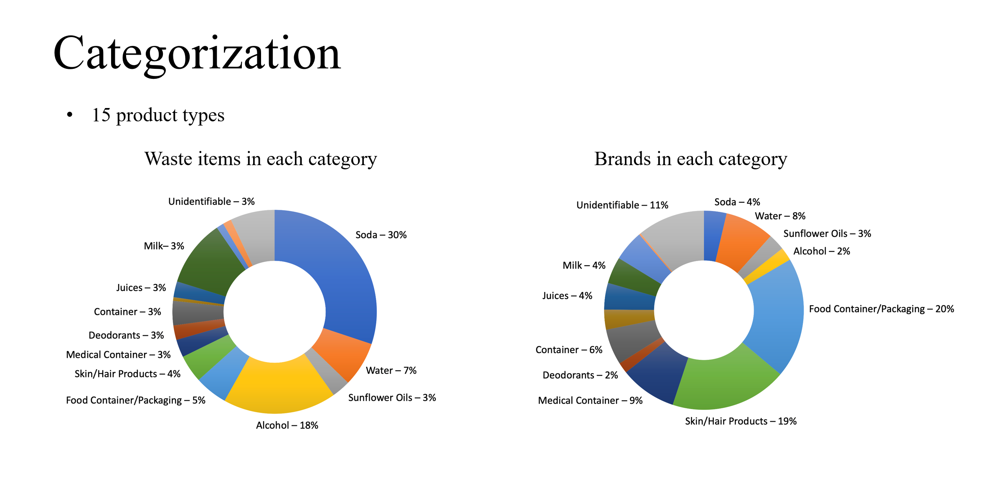

Closed-loop plastic recycling:
Design and evaluation of reverse logistics for plastic bottles
Global Health Engineering Group, Dept of Mechnical and Process Engineering
14 February 2023
Challenge of collection

Overview - Work Packages

Overview - Work Package 1

Overview - Work Package 1

Overview - Work Package 1

Overview - Work Package 1

Overview - Work Package 2

Overview - Work Package 2

Overview - Work Package 3
Work package 3
- Research question: What is the financial sustainability of a closed-loop recycling pilot for HDPE bottles?
- Methodology: Financial model assessing total costs along the value chain
Waste characterization at the beach in Durban, South Africa

Waste characterization at litter booms in Durban, South Africa

Plastic distribution by application at litter booms in Durban, South Africa

##Mismanaged plastic waste {visibility=“uncounted”}
##Recycled plastic waste {visibility=“uncounted”}